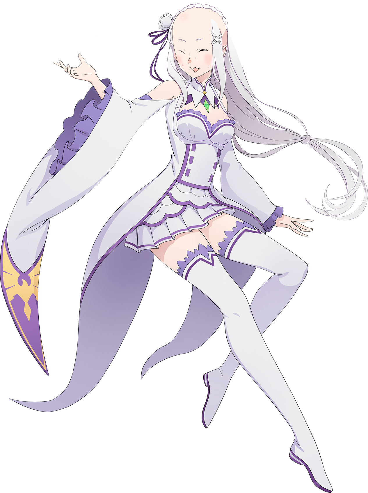
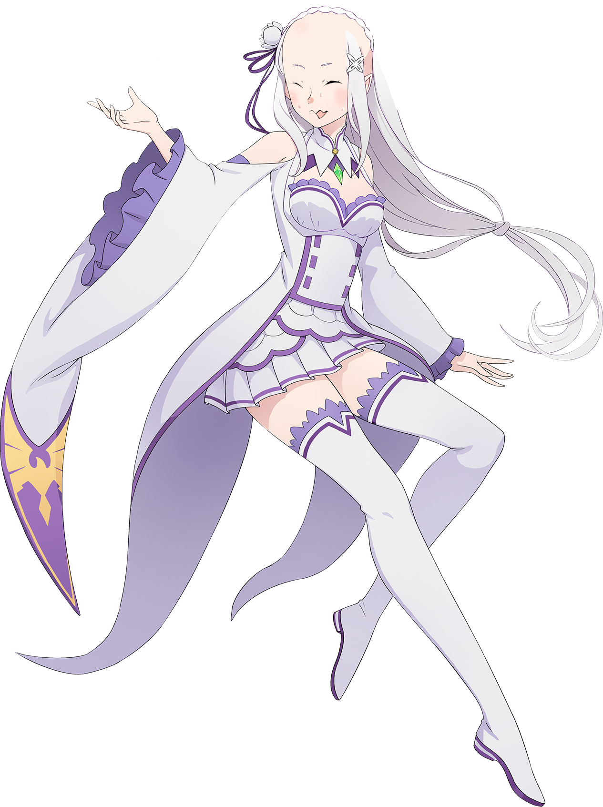

Olá, aqui é o Zen
Sou apenas um humilde membro do chat que tem dislexia e gosta de fazer piadas ruins.
Essa página começou como apenas uma ideia despretenciosa. Mas rapidamente comecei a me divertir mais e mais. Foi um ótimo objeto de estudo.
Comecei com as aulas em Março por meses fiquei só na pagina principal. Nos ultimos 15 dias de férias comecei e terminei as outras seções do site.
fui atrás de pngs para o avatar de cada um da Ordem, infelizmente não achei nada para o Mauricio e felizmente não achei nada para o tigas
O modelo 3d foi uma das coisas que mais demorou, mas foi bem divertido, foi a primeira coisa que modelei na vida, talvez por isso não seja dos melhores heh.
 
